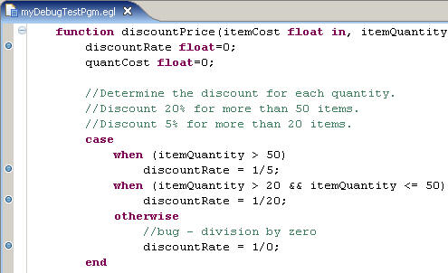

When you run a program, service, or Rich UI
handler in the EGL debugger, you set a breakpoint to suspend execution
and then run the code in a controlled way. You can investigate the
execution paths in your logic and the changing values of variables.
When you are debugging logic that is outside of Rich UI, you can
also do a “hot code replace”:
- When the debugger suspends execution on a statement, you change
the code that runs subsequent to the statement.
- The subsequent code and the debugger behave as if the changes
had been in place before the debugging session.
The debugger always starts debugging from the program or Rich UI
handler that runs initially. If you want to debug a service that is
available in the workbench or to debug a library, you must step into
the service or library from other logic. In some cases, you might
want to write a simple program or Rich UI handler to call the logic
that you want to debug.
The EGL debugger does not step into code that was deployed and
is running on an application server. However, when you are debugging
a service for which the Service type is in your workspace, you gain
the benefit of a test server, as described in EGL test server.
This introductory topic includes the following sections:
Breakpoints
You can add
a breakpoint at most EGL logic statements, though not at the following
ones:
- A variable declaration that does not include an assignment.
- A line of code that begins a logical unit or that gives a directive.
Examples are the package declaration or
the line that begins with program.
- An end statement.
- A blank line or a line that consists only of a comment.
Breakpoints do not affect the source code or generated
output, but are meaningful only during the debugging session.
The Debug perspective
The Debug
perspective gives you the easiest access to the capabilities of the
EGL debugger.
In the Debug view, the following capabilities
are available if you press the appropriate toolbar button or if you
right click and then select a menu option:
- Drop to frame
- Works with the stack, which is a list of runtime
functions that contributed to the current execution status. Included
in that list is the initialization function, which contains
the statements that initialize global variables.
The Drop
to frame command lets you return to the first statement
in any function in the stack, but does not change the values of variables
that were changed since that first statement ran.
The Drop
to frame command is not available for debugging code
written for JavaScript.
- Resume
- Continues to run your code until the next breakpoint is found
or until the run unit ends.
- Step into
- Runs the next EGL statement and pauses. If you issue this command
for a function invocation, execution stops at the first statement
in the function. Similarly, if you issue this command for a service
call and if the Service type is available in the workspace, execution
stops at the first statement in the service.
If you invoke code
that is not available in the workspace, the command runs the external
code and stops execution at the first statement where your logic resumes.
In Rich UI, where service invocation is asynchronous, execution continues
at the first statement in the callback function or exception handler.
If
you issue this command for a statement that is the last one running
in the function and if the statement does not explicitly return control
to the invoker or terminate the logic, the debugger pauses so that
you can inspect variable values.
- Step over
- Runs the next EGL statement and pauses. If you invoke a function
or service, the command runs that code and stops execution at the
first statement where your current logic resumes. In Rich UI, execution
continues at the first statement in the callback function or exception
handler for that service.
If you issue this command for a statement
that is the last one running in the function and if the statement
does not explicitly return control to the invoker or terminate the
logic, the debugger pauses so that you can inspect variable values.
- Step return
- Runs the statements needed to return to the logic that invoked
the code that you are debugging. After returning to that logic, the
command pauses at the statement that receives control.
- Suspend
- Causes the debugger to pause at the next opportunity. This button
is available only while execution is in progress.
- Terminate
- Terminates the program without running any further instructions.
In
the Debug view, the Terminate and Relaunch menu
option lets you end the run and immediately begin another.
- Use step filters
- Has no effect when you are working with EGL code.
If you right click the gray border to the left
of a line of code, the following debugging options are available in
the context menu:
- Disable breakpoint
- Retains an existing breakpoint so that you recall its position,
but disables use of that breakpoint.
- Enable breakpoint
- Enables a breakpoint that you formerly set and then disabled.
- Show line numbers
- Displays the line numbers in the code you are debugging.
- Toggle breakpoint
- Sets or clears a breakpoint. You can accomplish the task without
opening the context menu, by double clicking on the gray area.
If you right click in the code that you are
debugging, the following debugging option in available in the context
menu:
- Run to line
- Runs all statements up to, but not including, the statement on
a specified line.
As noted in the next section, the Debug perspective
includes views to see variable values and to quickly enable or disable
breakpoints.
A short practice session
To
debug a sample program, do as follows:
- Create an EGL basic project, create a package named myPkg and
copy the following code into a source file in that package:
package common;
program MyProgram
function main()
//Provide some initial values for the array of items.
customerItems Items[] = new Items[3];
customerItems[1].itemNumber=1;
customerItems[2].itemNumber=2;
customerItems[3].itemNumber=3;
customerItems[1].itemCost=12.50;
customerItems[2].itemCost=200;
customerItems[3].itemCost=49.95;
customerItems[1].itemQuantity=30;
customerItems[2].itemQuantity=10;
customerItems[3].itemQuantity=60;
counter int;
orderTotal float=0;
//Calculate the total cost of the items.
//Use the discountPrice function to get the discounted cost of each item.
for (counter from 1 to customerItems.getSize() by 1)
orderTotal += discountPrice(customerItems[counter].itemCost,
customerItems[counter].itemQuantity);
end // for loop
//Write the output to the console.
SysLib.writeStderr("The total cost for the order is $" + orderTotal);
end // main
//Return a total price for a group of items
//based on the item price and a quantity discount.
function discountPrice(itemCost float in, itemQuantity int in) returns(float)
discountRate float=0;
quantCost float=0;
//Determine the discount for each quantity.
//Discount 20% for more than 50 items.
//Discount 5% for more than 20 items.
case
when (itemQuantity > 50)
discountRate = 1/5;
when (itemQuantity > 20 && itemQuantity <= 50)
discountRate = 1/20;
otherwise
//bug - division by zero
discountRate = 1/0;
end
//Multiply the cost of the item, the number of items,
//and the discounted price.
quantCost = itemCost*itemQuantity*(1-discountRate);
quantCost = MathLib.round(quantCost, -2);
return (quantCost);
end // function discountPrice
end // program
Record Items
itemNumber int;
itemCost float;
itemQuantity int;
end
- Add breakpoints at four statements in the discountPrice function,
as shown here:

To set a given breakpoint,
double-click the gray margin to the left of the statement. Each breakpoint
is marked with a blue circle in that margin.
- In the Project Explorer view, right-click the EGL source program
and click .
- If you are asked whether to open the Debug perspective, click Yes.
The debugger begins running the program.
- At the first breakpoint, the debugger suspends the run:
- The EGL editor highlights the line about to be executed.
- The Variables view shows the value of all the variables in the
current logic. You can use this view to track the value of a variable
through the program.
- The Debug view lists the threads running within the current run
unit. Use this view to resume or stop the debugging process.
- The Breakpoints view lists the breakpoints in the program. From
this view, you can disable a breakpoint temporarily by clearing its
check box.
- When you want the debugger to continue, press F11 or click the Resume button
at the top of the Debug view.
Run the example program from breakpoint
to breakpoint until the debugger reaches the line discountRate
= 1/0;, at which point the run ends with an error.
- Right click in the Debug view and click Relaunch.
When the debugger suspends execution at the first breakpoint, click
one or the other step button so that the program runs the next line
and then pauses. Try different options.
- When you are finished with the practice session, click the Terminate button
at the top of the Debug view and return to the coding task by clicking
the EGL perspective icon at the top right of the workbench.
For further information
The following
topics are also available: